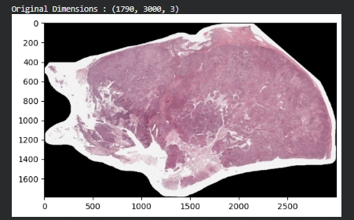

El proyecto se centra en visión artificial y deep learning aplicados a imágenes médicas.
Juan Pablo Hernández García – Científico de Datos.
Clasificación de los 5 subtipos de carcinoma de cáncer de ovario. Proyecto desarrollado a partir de la competencia de Kaggle UBC Ovarian Cancer Subtype Classification and Outlier Detection (UBC-OCEAN). Se analizaron imágenes de tejido de los 5 tipos de carcinoma de cáncer de ovario, se etiquetaron los carcinomas y se construyó una red neuronal capaz de detectarlos y clasificarlos. El desempeño del modelo se evaluó con una matriz de confusión multiclase que muestra, para cada uno de los 5 subtipos, cuántos casos se clasificaron correctamente y con cuáles se confundían.

Los 5 subtipos de carcinoma analizados
- CC – Carcinoma de células claras.
- EC – Carcinoma endometrioide.
- HGSC – Carcinoma seroso de alto grado.
- LGSC – Carcinoma seroso de bajo grado.
- MC – Carcinoma mucinoso.
Proceso de desarrollo
- Análisis exploratorio de las imágenes y de la distribución de casos por subtipo.
- Etiquetado de los carcinomas para asociar cada imagen con su subtipo.
- Preparación de las imágenes: recorte, redimensionamiento y normalización para la red neuronal.
- Construcción y entrenamiento de una red neuronal convolucional para clasificar los 5 subtipos.
- Evaluación con una matriz de confusión multiclase y métricas por subtipo.
Matriz de confusión multiclase
Con 5 clases, la matriz de confusión es una tabla de 5 × 5: las filas son el subtipo real y las columnas el subtipo que predijo la red. La diagonal (en verde) son los aciertos; cualquier valor fuera de la diagonal indica que un carcinoma se confundió con otro subtipo.
| Real \ Predicho | CC | EC | HGSC | LGSC | MC |
|---|---|---|---|---|---|
| CC | acierto | confusión | confusión | confusión | confusión |
| EC | confusión | acierto | confusión | confusión | confusión |
| HGSC | confusión | confusión | acierto | confusión | confusión |
| LGSC | confusión | confusión | confusión | acierto | confusión |
| MC | confusión | confusión | confusión | confusión | acierto |
Fórmulas e Indicadores Utilizados
Exactitud (Accuracy)
Exactitud = Suma de la diagonal / Total de casosExplicación: Porcentaje de imágenes clasificadas en el subtipo correcto.
Sensibilidad (Recall) por subtipo
Recallk = Aciertos del subtipo k / Total real del subtipo kExplicación: De todos los casos reales de un subtipo, cuántos detectó la red. Es clave en medicina, porque un carcinoma no detectado es el error más costoso.
Precisión por subtipo
Precisiónk = Aciertos del subtipo k / Total predicho como subtipo kExplicación: Cuando la red dice “este es el subtipo k”, qué tan seguido tiene razón.
Exactitud balanceada
Exactitud balanceada = (RecallCC + RecallEC + RecallHGSC + RecallLGSC + RecallMC) / 5Explicación: Promedia el recall de los 5 subtipos para que los subtipos con pocos casos pesen igual que los más frecuentes; así un modelo no puede verse bien solo por acertar el subtipo más común.
Objetivo del Proyecto
Apoyar el diagnóstico de cáncer de ovario mediante una red neuronal que identifique automáticamente el subtipo de carcinoma a partir de imágenes de tejido. Identificar el subtipo correcto ayuda a orientar el tratamiento, y un modelo así puede servir como segunda opinión para los especialistas.